ДАТЧИК ТЕМПЕРАТУРЫ ЗАДНЕГО ИСПАРИТЕЛЯ > РАЗБОРКА |
| 1. СНИМИТЕ ЗАДНИЙ БОКОВОЙ ВОЗДУХОВОД № 4 (для моделей с задним воздуховодом) |
| 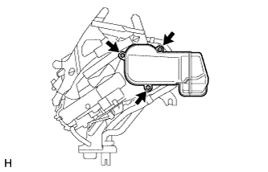 |
Выверните 3 винта и снимите воздуховод.
| 2. СНИМИТЕ СЕРВОПРИВОД ЗАДНЕЙ СМЕСИТЕЛЬНОЙ ЗАСЛОНКИ В СБОРЕ |
| 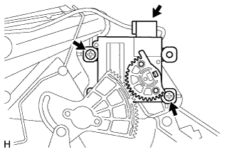 |
Отсоедините разъем.
Выверните 2 винта и снимите сервопривод заслонки.
| 3. СНИМИТЕ КРОНШТЕЙН РАДИАТОРА |
| 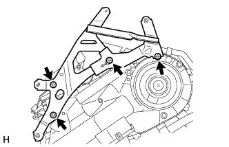 |
Выверните 4 винта и снимите кронштейн.
| 4. СНИМИТЕ СЕРВОПРИВОД ЗАДНЕЙ ЗАСЛОНКИ РАСПРЕДЕЛЕНИЯ ПОТОКОВ ВОЗДУХА В СБОРЕ |
| 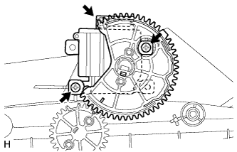 |
Отсоедините разъем.
Выверните 2 винта и снимите сервопривод заслонки.
| 5. СНИМИТЕ ТРУБКУ И ОБВЯЗКУ СИСТЕМЫ КОНДИЦИОНИРОВАНИЯ В СБОРЕ |
| 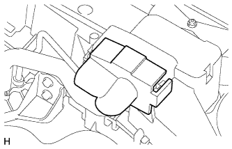 |
Снимите уплотнение.
| 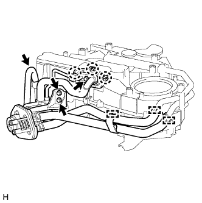 |
Отцепите 3 захвата и снимите обивку.
Выверните болт и 2 винта.
С помощью плоскогубцев зажмите захваты фиксаторов и сдвиньте 2 фиксатора.
Снимите зажим.
Отсоедините сливной шланг.
Снимите трубку и обвязку системы кондиционирования в сборе.
Снимите с трубки и обвязки системы кондиционирования в сборе 2 кольцевых уплотнения.
| 6. СНИМИТЕ БЛОК РАДИАТОРА ОТОПИТЕЛЯ |
 |
Выверните винт.
Освободите захват и откройте зажим подогревателя.
| 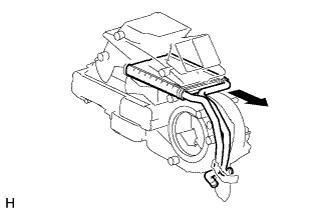 |
Снимите радиатор отопителя.
| 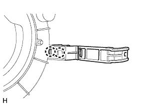 |
Освободите 2 захвата и снимите зажим подогревателя.
| 7. СНИМИТЕ КРОНШТЕЙН ОТОПИТЕЛЯ |
| 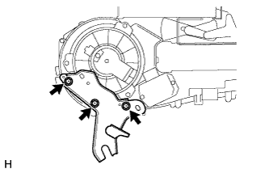 |
Выверните 3 винта и снимите кронштейн.
| 8. СНИМИТЕ ЗАДНИЙ ВЕНТИЛЯТОР С ЭЛЕКТРОДВИГАТЕЛЕМ В СБОРЕ |
| 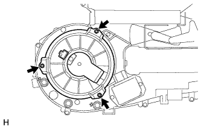 |
Выверните 3 винта и снимите задний вентилятор с электродвигателем.
| 9. СНИМИТЕ КОНТРОЛЛЕР ЭЛЕКТРОДВИГАТЕЛЯ ВЕНТИЛЯТОРА |
| 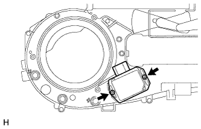 |
Выверните 2 винта и снимите контроллер электродвигателя вентилятора.
| 10. СНИМИТЕ КЛАПАН КОМПЕНСАЦИИ РАСШИРЕНИЯ ЗАДНЕГО КОНДИЦИОНЕРА |
| 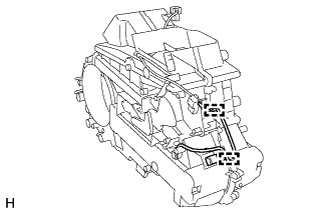 |
Снимите 2 зажима.
| 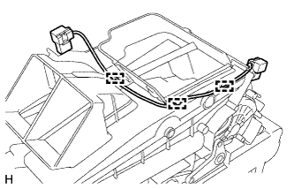 |
Освободите 3 зажима и отсоедините жгут проводов системы кондиционирования от корпуса заднего кондиционера.
| 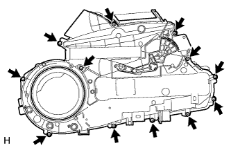 |
Выверните 12 винтов и снимите левый корпус заднего кондиционера.
| 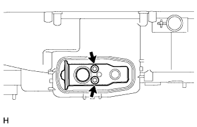 |
С помощью шестигранного ключа на 4 мм выверните 2 болта с шестигранной головкой.
| 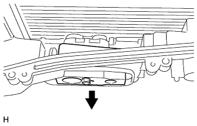 |
Снимите расширительный клапан.
| 11. СНИМИТЕ ЗАДНИЙ ИСПАРИТЕЛЬ В СБОРЕ |
| 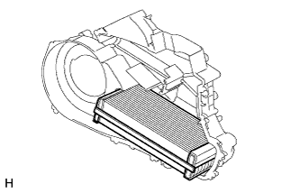 |
Снимите испаритель с правого корпуса заднего кондиционера.
| 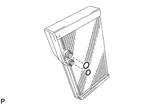 |
Снимите с испарителя 2 кольцевых уплотнения.
| 12. СНИМИТЕ ДАТЧИК ТЕМПЕРАТУРЫ ЗАДНЕГО ИСПАРИТЕЛЯ |
| 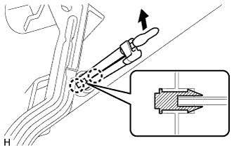 |
Поверните наконечник датчика в направлении, указанном на рисунке стрелкой, чтобы снять его с пластины кронштейна.
Отцепите 2 захвата и снимите датчик.